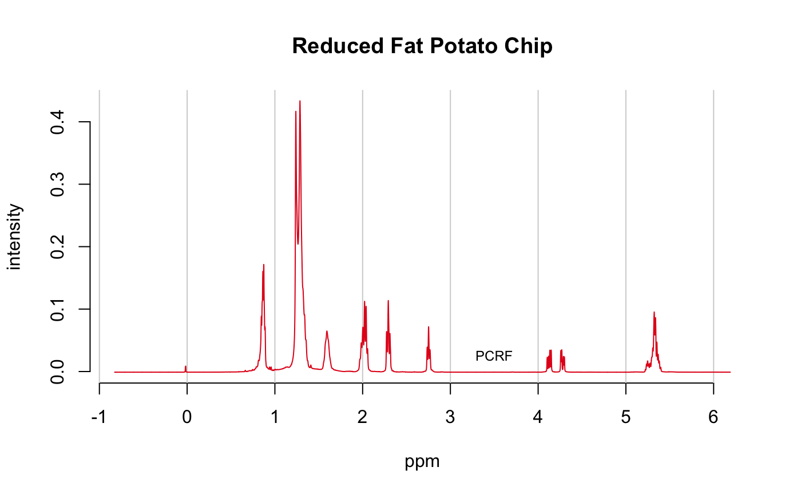

R/files2SpectraObject.R, R/matrix2SpectraObject.R
files2SpectraObject.RdThese functions import data into a Spectra object. They use
read.table to read files so they are
very flexible in regard to file formatting. Be sure to see the …
argument below for important details you need to provide.
files2SpectraObject(gr.crit = NULL, gr.cols = c("auto"), freq.unit = "no frequency unit provided", int.unit = "no intensity unit provided", descrip = "no description provided", fileExt = "\\.(csv|CSV)$", out.file = "mydata", debug = FALSE, ...) matrix2SpectraObject(gr.crit = NULL, gr.cols = c("auto"), freq.unit = "no frequency unit provided", int.unit = "no intensity unit provided", descrip = "no description provided", in.file = NULL, out.file = "mydata", chk = TRUE, ...)
| gr.crit | Group Criteria. A vector of character strings which will be
searched for among the file/sample names in order to assign an individual
spectrum to group membership. This is done using grep, so characters
like "." (period/dot) do not have their literal meaning (see below).
Warnings are issued if there are file/sample
names that don't match entries in |
|---|---|
| gr.cols | Group Colors. Either the word "auto", in which case colors
will be automatically assigned, or a vector of acceptable color names with
the same length as |
| freq.unit | A character string giving the units of the x-axis (frequency or wavelength). |
| int.unit | A character string giving the units of the y-axis (some sort of intensity). |
| descrip | A character string describing the data set that will be stored. This string is used in some plots so it is recommended that its length be less than about 40 characters. |
| fileExt | A character string giving the extension of the files to be
processed. |
| out.file | A file name. The
completed object of S3 class |
| debug | Logical. Applies to |
| ... | Arguments to be passed to |
| in.file | Character. Applies to |
| chk | Logical. Applies to |
A object of class Spectra. An unnamed object
of S3 class Spectra is also written to out.file. To
read it back into the workspace, use new.name <- loadObject(out.file)
(loadObject is package R.utils).
files2SpectraObject: Import data from separate csv files
matrix2SpectraObject: Import a matrix of data
files2SpectraObject acts on all files in the current working
directory with the specified fileExt so there should be no
extra files of that type hanging around (except see next paragraph).
The first column should
contain the frequency values and the second column the intensity values. The
files may have a header or not (supply header = TRUE/FALSE as
necessary). The frequency column is assumed to be the same in all files.
If fileExt contains any of "dx", "DX", "jdx" or
"JDX", then the files will be processed by readJDX.
Consider setting debug = TRUE for this format, as there are many
options for JCAMP, and many are untested. See readJDX for
known limitations.
This function takes a csv-like file, containing frequencies in the first
column, and samples in additional columns, and processes it into a
Spectra object. The file MUST have a header row which includes
the sample names. There need not be a header for the first (frequency)
column.
The matching of gr.crit against the sample file names
(in files2SpectraObject) or column headers/sample names
(in codematrix2SpectraObject) is done one at
a time, in order, using grep. While powerful, this has the potential to lead
to some "gotchas" in certain cases, noted below.
Your file system may allow file/sample names which R will not like, and will
cause confusing behavior. File/sample names become variables in ChemoSpec,
and R
does not like things like "-" (minus sign or hyphen) in file/sample names. A hyphen
is converted to a period (".") if found, which is fine for a variable name.
However, a period in gr.crit is interpreted from the grep point of view,
namely a period matches any single character. At this point, things may behave
very differently than one might hope. See make.names for allowed
characters in R variables and make sure your file/sample names comply.
The entries in gr.crit must be
mutually exclusive. For example, if you have files with names like
"Control_1" and "Sample_1" and use gr.crit = c("Control", "Sample")
groups will be assigned as you would expect. But, if you have file names
like "Control_1_Shade" and "Sample_1_Sun" you can't use gr.crit =
c("Control", "Sample", "Sun", "Shade") because each criteria is grepped in
order, and the "Sun/Shade" phrases, being last, will form the basis for your
groups. Because this is a grep process, you can get around this by using
regular expressions in your gr.crit argument to specify the desired
groups in a mutually exclusive manner. In this second example, you could
use gr.crit = c("Control(.*)Sun", "Control(.*)Shade", "Sample(.*)Sun",
"Sample(.*)Shade") to have your groups assigned based upon both phrases in
the file names.
To summarize, gr.crit is used as a grep pattern, and the file/sample names
are the target. Make sure your file/sample names comply with make.names.
Finally, samples whose names are not matched using gr.crit are still
incorporated into the Spectra object, but they are not
assigned a group or color. Therefore they don't plot, but they do take up space in a
plot! A warning is issued in these cases, since one wouldn't normally want
a spectrum to be orphaned this way.
All these problems can generally be identified by running sumSpectra
once the data is imported.
https://github.com/bryanhanson/ChemoSpec
# Grab an included file ed <- system.file("extdata", package = "ChemoSpec") tf <- "PCRF.jdx" chk <- file.copy(from = file.path(ed, tf), to = file.path(getwd(), tf), overwrite = TRUE) # Now read in the file, and plot spec <- files2SpectraObject(gr.crit = "PCRF", freq.unit = "ppm", int.unit = "intensity", descrip = "test import", fileExt = "\\.jdx") sumSpectra(spec)#> #> test import #> #> There are 1 spectra in this set. #> The y-axis unit is intensity. #> #> The frequency scale runs from #> 6.189331 to -0.8256219 ppm #> There are 7014 frequency values. #> The frequency resolution is #> 0.001000278 ppm/point. #> #> This data set is not continuous #> along the frequency axis. #> Here are the data chunks: #> #> beg.freq end.freq size beg.indx end.indx #> 1 6.189331 -0.8256219 -7.014953 1 7014 #> #> The spectra are divided into 1 groups: #> #> group no. color symbol alt.sym #> 1 PCRF 1 #E41A1C 0 a #> #> #> *** Note: this data is an S3 object of class 'Spectra2D'